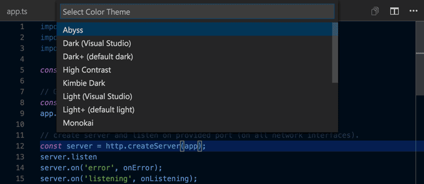
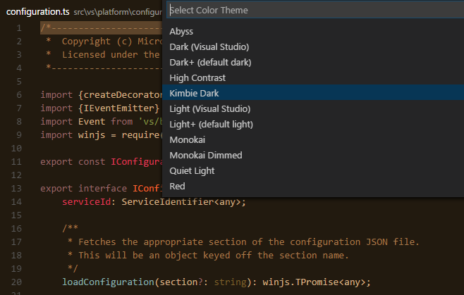
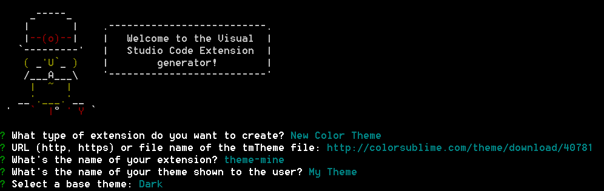
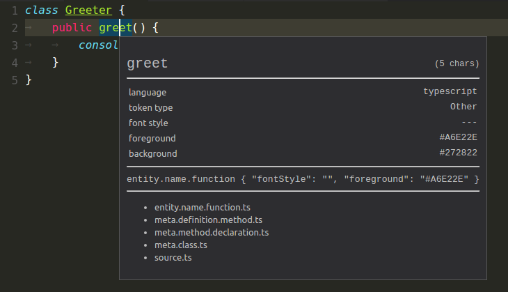

配色テーマ
配色テーマを使用することで好みや作業環境に合わせた、 VS Code の背景,テキスト,言語構文の色に変更できます。VS Code は大きく分けて light, dark, high contrast テーマをサポートしています。

配色テーマを選択
現在の配色テーマを、設定で設定します。
|
ただし、直接編集する必要はありません。配色テーマ選択を使用して、テーマをプレビューしながら選択する方が簡単です。
- ファイル > 基本設定 > 配色テーマ(Macの場合 Code > 基本設定 > 配色テーマ)で配色テーマ選択を開きます。
2.カーソルキーを使用して配色テーマをプレビューします。 - 配色テーマを選択して、Enterで確定します。

Tip: 既定の設定は、ユーザー設定に設定するのですべてのワークスペースに適用します。しかし、ワークスペース特定の配色テーマを選択することも可能です。これをするには、ワークスペース設定で配色テーマを設定してください。
Marketplace からテーマを追加
VS Code には初めからいくつかの配色テーマを用意しています。
その他多くのテーマは、コミュニティによって VS Code Marketplace にアップロードされています。使いたいものを見つけたら、インストールして再起動すれば新しいテーマが利用可能になります。
Tip: テーマを検索するには、 Extension ビュー(⇧⌘X (Windows, Linux Ctrl+Shift+X)) で
themeを検索します。
また、 VS Code Marketplace で直接テーマ を探すこともできます。
新しいテーマを追加
新しい TextMate テーマファイル(.tmTheme) を VS Code の yo code (拡張機能ジェネレータ(Yeoman)) を使用して追加することができます。拡張機能ジェネレータは TextMate テーマファイルを、 VS Code で使用できるようにパッケージ化します。
ColorSublime には、いくつもの既存 TextMate テーマがあります。気に入ったテーマを選び Yeoman で使用するダウンロードリンクをコピーしてください。リンクは "http://colorsublime.com/theme/download/(number)" このような形式になるはずです。code ジェネレータは .tmTheme のURLまたはファイルの場所、テーマ名およびテーマに関する情報を入力するように求めてきます。

出力ファイルを .vscode/extensions フォルダにコピーして VS Code を再起動します。
そうすればファイル > 基本設定 > カラー配色 を開いて、ドロップダウンリストで追加したテーマを確認できます。プレビュー表示は矢印キーを使います。

Marketplace にテーマを公開
新しいテーマをコミュニティと共有したいなら Marketplace に公開することができます。vsce publishing tool を使用して、テーマをパッケージ化して VS Code Marketplace に公開します。
Tip: ユーザがあなたのテーマを見つけやすくするために、拡張機能
package.jsonの説明に “theme” という単語を入れてCategoryをThemeに設定します。
VS Code Marketplace で 拡張機能を素晴らしいものにする方法についての提案を Marketplace Presentation Tips で参照してください。
カスタムテーマの作成
独自の TextMate テーマを最初から作成することもできます。詳細については TextMate theme と 言語文法 naming conventions を参照してください。
TextMate の文法標準スコープに加えて、VS Code にはテーマ調整に使うカスタム設定があります:
rangeHighlight: 範囲の背景色を強調します。これは Quick open と検索機能で利用されます。selectionHighlight: 選択により強調表示された領域の背景色inactiveSelection: フォーカスしていない選択された領域の背景色wordHighlight: 変数の読み取りや、読み取りアクセス時のシンボルの背景色wordHighlightStrong: 変数への書き込みや、書き込みアクセス時のシンボルの背景色findMatchHighlight: 検索に一致する領域の背景色currentFindMatchHighlight: 検索に一致する領域の選択時背景色findRangeHighlight: 検索のために選択された領域の背景色linkForeground: リンクの色activeLinkForeground: アクティブリンクの色hoverHighlight: ホバーしたときの背景色referenceHighlight: 参照検索に一致する参照の背景色guide: ネストレベル示すガイド色
カスタム設定を含む VS Code テーマのサンプルは ここ で確認できます。
文法の挙動は少しずつ違うため、テーマ作成はかなり難しいものになります。TextMate の規則に従い、文法も拡張機能で置き換えることができるようにテーマで言語固有のルールを避けるようにしてください。
TextMate スコープを調べる新しいツール
テーマ作成を支援する、トークンのスコープと一致するテーマルールを確認するウィジェットがあります。これはコマンドパレット(⇧⌘P (Windows, Linux Ctrl+Shift+P)) から Developer Tools: Inspect TM Scopes で起動します。

アイコンテーマ
ファイルアイコンのテーマは拡張機能によって提供され、気に入ったものをユーザーが選択します。ファイルアイコンはファイルエクスプローラーとタブ付き見出しに表示します。
ファイルアイコンのテーマ選択
現在のファイル アイコンのテーマは、ユーザー設定に設定されます。
|
直接 settings.json を編集する必要はありません。アイコン ファイルテーマ選択を使用して、テーマをプレビューしながら選択する方が簡単です。
- ファイル > 基本設定 > ファイル アイコンのテーマ(Macの場合 Code > 基本設定 > ファイル アイコンのテーマ)でファイル アイコンのテーマ選択を開きます。
2.カーソルキーを使用してファイル アイコンのテーマをプレビューします。 - ファイル アイコンのテーマを選択して、Enterで確定します。
既定では、ファイル アイコン セットは設定されていないため、ファイル エクスプローラーにアイコンを表示しません。ですがファイル アイコンを一度設定すれば、次回 VS Code 起動時から適用して表示します。
VS Code には Minimal と Seti のアイコンテーマ2つが初めから用意しています。もっと多くアイコンテーマをインストールするには、アイコンテーマ選択で Find more in the Marketplace… を選択します。
また、 VS Code Marketplace でテーマ を探すこともできます。
新しいアイコンのテーマを追加
アイコン(SVGが好ましい) と アイコンフォントから独自のアイコンのテーマを作成できます。例として、内蔵2つのテーマを確認してください: Minimal と Seti
作成するにはまず VS Code 拡張を作成し、 iconTheme contributes ポイントを追加します。
|
id はアイコンテーマの識別子です。これは、現在内部のみで使用します。将来的には設定で使用する可能性があるため、ユニークで読みやすいものにしてください。label は アイコンテーマ選択時のドロップダウンに表示する名前です。path は、アイコンセットを定義するファイル(拡張子を含む)のファイルの場所をさします。アイコンセット名が *icon-theme.json スキームに続けば、 VS Code で補完とホバーを得ることができます。
アイコン セットファイル
アイコン セット ファイルは、ファイルアイコンの関連付けとアイコンの定義からなる JSON ファイルです。
アイコンの関連付けとは、ファイルタイプ(‘file’, ‘folder’, ‘json-file’…)をアイコンの定義に書き込むことです。アイコンの定義は、アイコンがどこにあるかを定義します。これはイメージファイルでも、フォント内のグリフでもかまいません。
アイコンの定義
iconDefinitions セクションにはすべての定義を含みます。各定義には、定義を参照するために使用する id を持っています。また定義には、複数のファイルの関連付けによっても参照が可能です。
|
上記のアイコン定義には、識別子_folder_darkの定義を含みます。
次のプロパティをサポートします:
iconPath: svg/png を使用する場合: 画像へのパスfontCharacter: グリフフォントを使用する場合: 使用するフォント文字fontColor: グリフフォントを使用するとき: グリフに使用する色fontSize: フォントを使用するとき: フォントサイズ 既定では、フォント指定で指定したサイズを使用します。なお、親フォントサイズに相対的な大きさ(e.g 150%)にしなくてはいけません。fontId: フォントを使用するとき: フォントのID指定しない場合、フォントセクションで指定した最初のフォントを指定します。(編集メモ: font specification section がどこを指すのかわからない
ファイルの関連付け
アイコンは フォルダ, フォルダ名, ファイル, ファイル名, ファイル拡張子, language ids に関連付けることができます。
また関連付けは、それぞれ ‘light’ と ‘hightContrast’ の配色テーマに、適合しています。
各ファイルの関連付けは、アイコンの定義を指します。
|
fileはデフォルトのファイルアイコンで、拡張子、ファイル名または言語IDに一致しないすべてのファイルで表示します。ファイルアイコンの定義で定義したプロパティは継承します(グリフにのみ関連し、fontSizeに便利です)。folderは折りたたまれたフォルダのアイコンです。またfolderExpandedを設定していない場合は、展開したフォルダのためのアイコンになります。特定フォルダ名のアイコンはfolderNamesプロパティを使用して関連付けます。
このアイコンはオプションです。ですから、設定しない場合は表示しません。folderExpandedは展開したフォルダのためのアイコンです。このアイコンはオプションです。設定していない場合はfolderに定義したアイコンを表示します。folderNamesはフォルダ名をアイコンに関連付けます。キーは、パスセグメントを含まないフォルダ名になります。型もしくはワイルドカードはサポートしません。フォルダ名は大文字と小文字を区別しません。folderNamesExpandedは展開したフォルダ名のアイコンに関連付けます。キーは、パスセグメントを含まないフォルダ名になります。型もしくはワイルドカードはサポートしません。フォルダ名は大文字と小文字を区別しません。languageIdsは言語をアイコンに関連付けます。キーは language contribution point で定義されている言語IDです。ファイルの言語は language contribution で定義しているファイル拡張子と、ファイル名に基づいて評価します。language contribution の ‘first line match’ は考慮しないことに注意してください。fileExtensionsはファイル拡張子をアイコンに関連付けます。キーにはファイルの拡張子名を設定します。拡張子名とは、dot を含まないその後ろのファイル名セングメントです。また、複数の拡張子と一致することができます。lib.d.tsのようなファイル名であればd.tsとtsに一致します。拡張子の大文字と小文字を区別しません。fileNamesはファイル名をアイコンに関連付けます。キーは、パスセグメントを含まないファイル名になります。型もしくはワイルドカードはサポートしません。フォルダ名のマッチングは大文字と小文字を区別しません。この設定は、ファイル拡張子や言語IDのアイコンより優先します。
fileExtensions は languagesID より優先しますが fileNames より劣位です。
light と highContrast セクションは、上に表記したものと同じプロパティを指定できます。これらは、対応するテーマのアイコンに上書きできます。
(編集メモ: テーマはベーステーマを複数指定でき、ベーステーマに合わせてそれを指定できる。
フォントの定義
‘fonts’ セクションでは、使用したいグリフフォントの宣言をします。
あとでこれらのフォントをアイコンの定義で参照できます。アイコンの定義でフォントIDを指定しなかった場合、最初に宣言したフォントを既定で使用します。
拡張機能にフォントファイルをコピーして、それに応じてパスを設定します。
これに WOFF フォントを使用することを推奨します。
- ‘woff’ をフォーマットとして設定します。
- weight プロパティ値の定義 こちら
- スタイル プロパティ値の定義 こちら
- サイズはアイコンが使用しているフォントサイズに相対的でなければなりません。そのため、常にパーセンテージを使用してください。
|
次のステップ
テーマは VS Code カスタマイズの1つにすぎません。VS Code の拡張性について、次のトピックで詳細を参照してください:
- Colorizers and Bracket Matchers - TextMate の色付け機能をインポートする方法
- Snippets - お気に入りの言語スニペットを追加
- Extending Visual Studio Code -
VS Code を拡張するその他の方法
よくある質問
Q: VS Code のどこをカスタムカラーでテーマ化できますか?
エディタの入力領域(文字色, 背景, 選択, lineHighlight, caret, syntax token)に加えて、カスタム UI の一部です (Creating a Theme のリスト参照してください)。テーマを投稿するときは、基本テーマを指定します。light (vs), dark (vs-dark), high contrast (hc-black) から選択してください。基本テーマは、ファイルエクスプローラーなどワークベンチ内すべての領域で使用します。また、これを拡張機能によってカスタマイズしたり投稿することはできません。
Q: カスタムカラーテーマで使用できるスコープのリストはありますか?
VS Code のテーマは標準 TextMate テーマを使用しています。ですから VS Code のトークナイザは、安定した TextMate トークナイザであり、主にコミュニティによって管理され、他の製品でも使用しています。
使用しているスコープの詳細については TextMate documentation と blog post を確認してください。テーマを検討するには ここ がお勧めです。